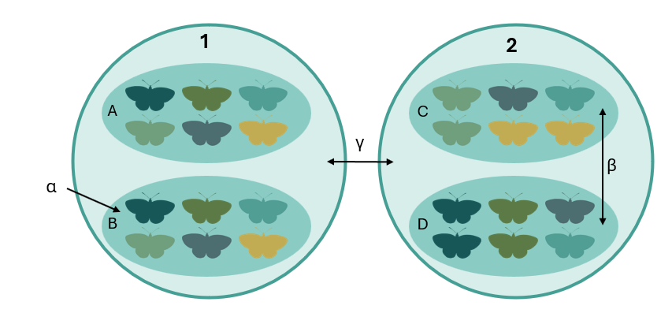
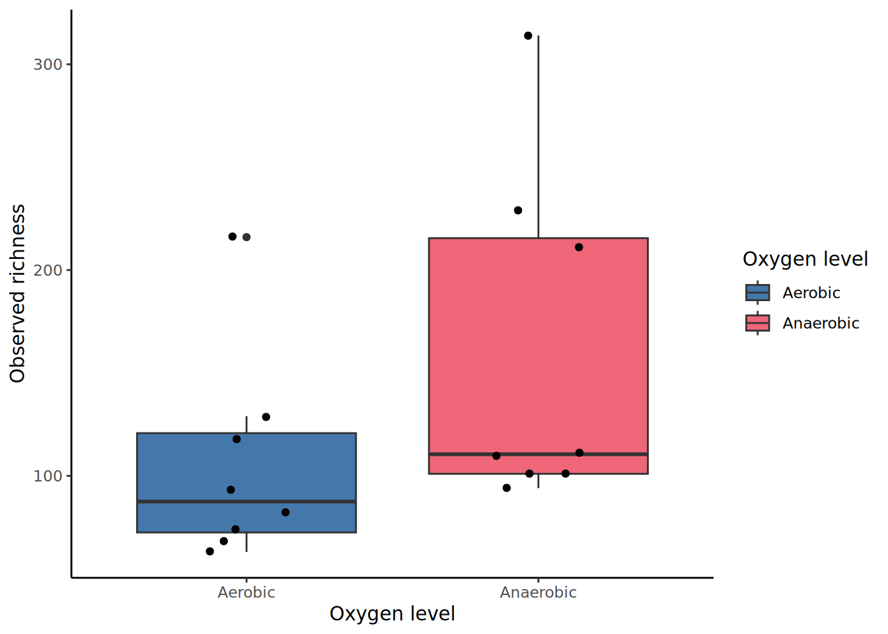
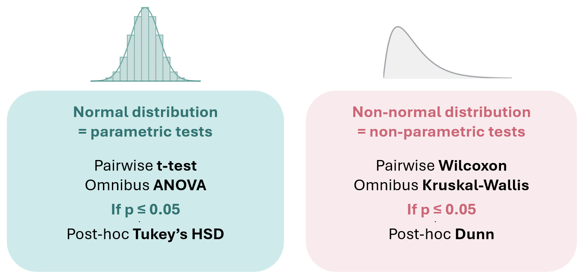
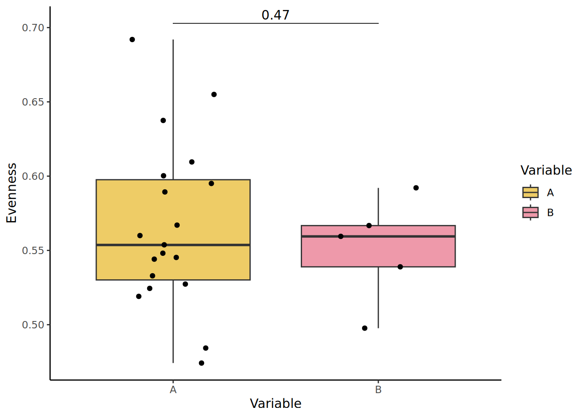
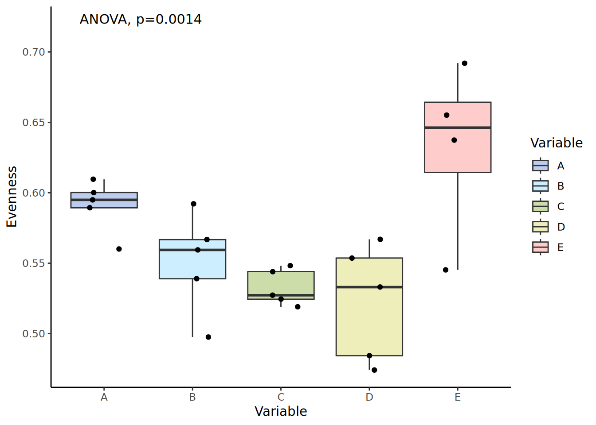
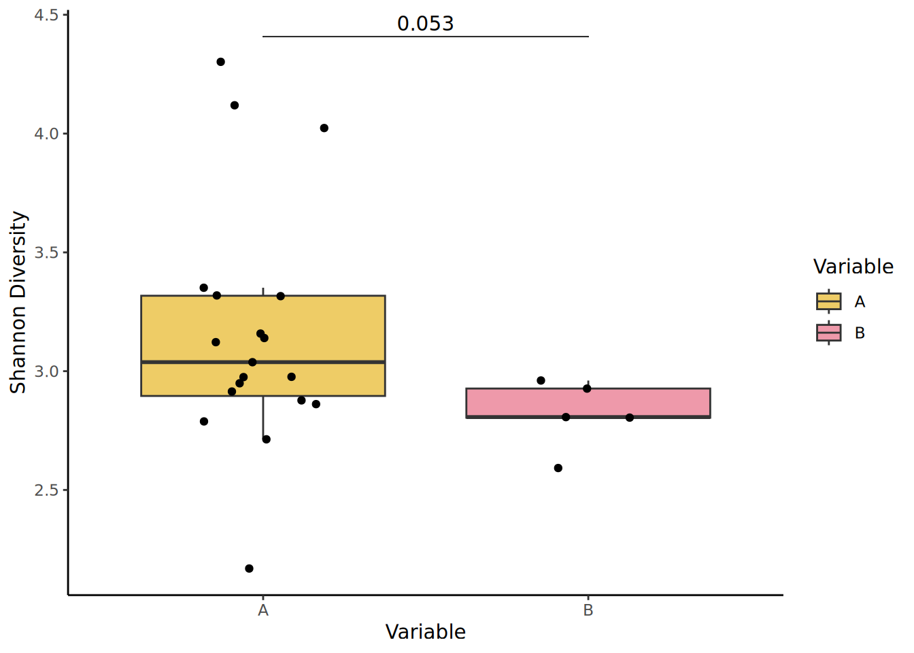
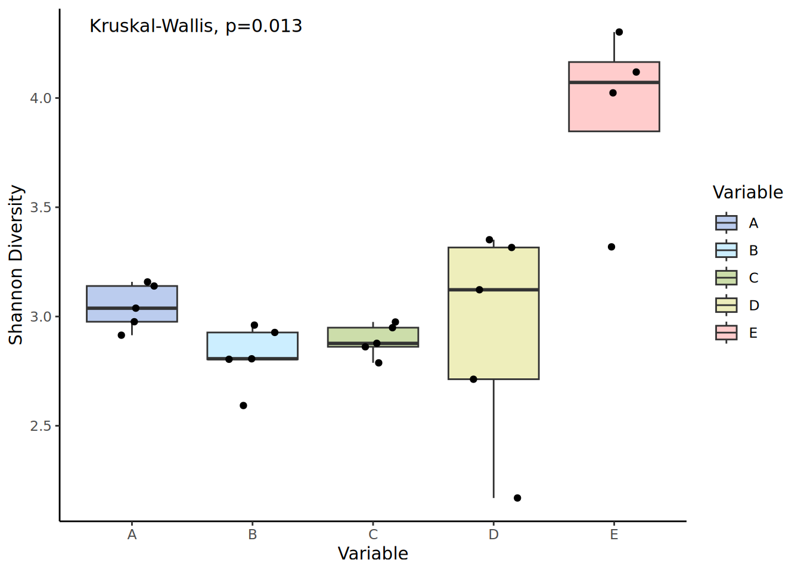
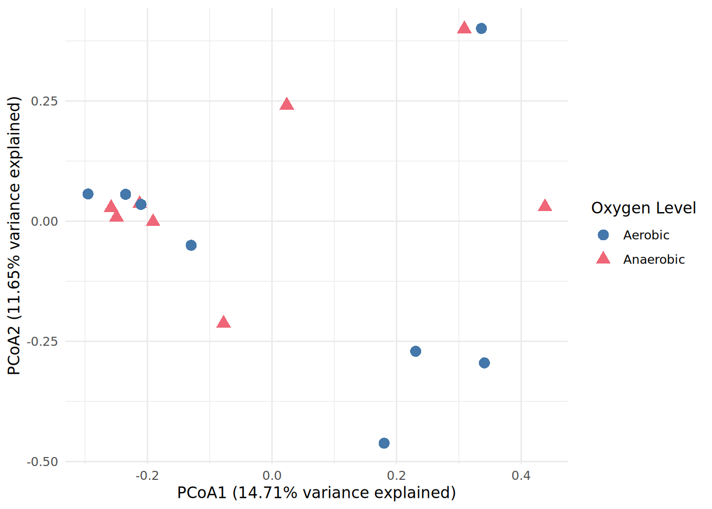
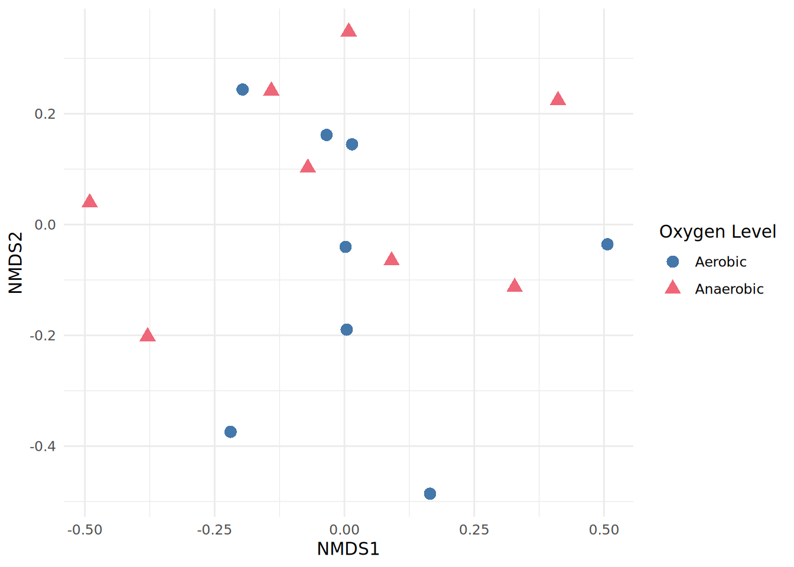
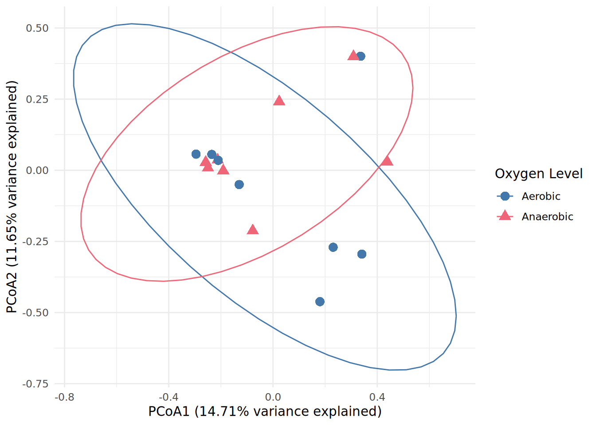

library(tidyverse)
library(vegan)
library(patchwork)
library(agricolae)
library(ggpubr)
library(dunn.test)
library(PMCMR)
library(rstatix)
#change this path to match your folder's location
setwd("/Users/myname/folder1/subfolder2/MicrobiomeAnalysisWorkshop")
#check your working directory location
getwd()
#import our ASV, taxa, and metadata tables
rarefied_filtered_asv_count.data <- read.table(file="rarefied_filtered_asv_abundance_table.txt", sep = " ",
header = TRUE, quote = "\"", check.names = FALSE,
stringsAsFactors = FALSE)
asv_relative_abundance.data <- read.table(file="relative_rarefied_filtered_asv_abundance_table.txt", sep = " ",
header = TRUE, quote = "\"", check.names = FALSE,
stringsAsFactors = FALSE)
filtered_taxa.data <- read.table(file = "filtered_taxonomy_table.txt", sep = " ",
header = TRUE, quote = "\"", check.names = FALSE,
stringsAsFactors = FALSE)
filtered_meta.data <- read.table(file = "filtered_sample_metadata.txt", sep = " ",
header = TRUE, quote = "\"", check.names = FALSE,
stringsAsFactors = FALSE)Diversity metrics & data visualization
Overview
So far, we have produced the following data tables:
An ASV count table (
rarefied_filtered_asv_count.data) which has:Been filtered to remove unwanted ASVs
Had negative controls removed
Been normalized to rarefy samples
An ASV count table (
asv_relative_abundance.data) which has:Been filtered to remove unwanted ASVs
Had negative controls removed
Been normalized to rarefy samples
Had counts converted to relative abundance (%)
We’ll also be working with a metadata table (filtered_meta.data) which represents metadata information for the different samples.
In this session, we will:
Define, estimate, and interpret alpha-diversity indices.
Explore beta-diversity using Principal Coordinates Analysis (PCoA).
Visualize and interpret the bacterial community composition for the different samples and variables.
Stop & think
Most datasets will have have multiple variables with an underlying experimental design. What would be your first idea to analyze this data?
Learning objectives
By the end of today’s session, you should be able to:
Describe the differences between alpha and beta diversity
Describe the differences between different types of alpha diversity metrics
Create diversity metric and relative abundance plots
Alpha diversity
Alpha (α) diversity represents diversity within a sample. In other words, what is there and how much is there in terms of species. When it comes to microbes, it’s not always easy to define a species… Fortunately, we can calculate alpha diversity at different taxonomic levels. In this tutorial, we are looking at the ASV level.

Several alpha diversity indices can be calculated. Each index take into account different factors, which gives them unique advantages for assessing diversity within a sample:
Richness represents the total number of of distinct units observed within a sample. In our case, these are ASVs.
Evenness provides information about the equity in species abundance in each sample. In other words, do all species have similar abundances, or do some species dominate?
Shannon diversity combine richness & evenness, and is weighted towards richness. In other words, it prioritizes rare taxa.
Simpson diversity combines richness & evenness, and is weighted towards evenness. In other words, it prioritizes abundant taxa.
Alpha diversity should be calculated from the raw ASV count data (rarefied_filtered_asv_count.data) and not from relative abundance data. We typically do not use relative abundance data because we are not comparing samples to each other, but rather assessing diversity within each sample.
These are metrics to help contrast our samples within an experiment. Alpha diversity metrics should not be considered “true” values or be compared across studies.
It is also important to not use (numerically) filtered ASV count data because many richness estimates are modeled on singletons and doubletons in the ASV count table (e.g., Chao1). This means we need them to keep them in the dataset to meaningfully estimate richness.
Estimating alpha diversity indices
Load the required packages and objects:
Here we are using the estimateR() and diversity() functions from the vegan package to calculate alpha diversity metrics.
Estimate richness with the estimateR() function: This function estimates three richness types - observed species richness (S.obs), bias-corrected Chao (S.chao1; Chiu et al., 2014) and ACE (S.ACE; O’Hara 2005).
Note: Nonparametric richness estimators Chao1 and ACE must not be used with amplicon sequence variant data - using these richness estimators with ASV data leads to meaningless results. Therefore, we will only interpret S.obs.
#estimate richness using ASV count data & transpose dataframe
alpha_richness <- t(estimateR(rarefied_filtered_asv_count.data))Estimating alpha diversity metrics with the diversity() function:
#estimate evenness
alpha_evenness <- diversity(rarefied_filtered_asv_count.data)/log(specnumber(rarefied_filtered_asv_count.data))
#estimate Shannon diversity
alpha_shannon <- diversity(rarefied_filtered_asv_count.data, index="shannon")
#estimate Simpson diversity
alpha_simpson <- diversity(rarefied_filtered_asv_count.data, index="simpson")
#estimate inverse Simpson diversity
alpha_invsimpson <- diversity(rarefied_filtered_asv_count.data, index="invsimpson")
#combine all indices into one alpha diversity data object
alpha_diversity <- data.frame(SampleID=rownames(alpha_richness), alpha_evenness, alpha_shannon, alpha_simpson, alpha_invsimpson) %>% right_join(filtered_meta.data, by = "SampleID")
#remove rownames
rownames(alpha_diversity) <- NULL
#check out the new data
glimpse(alpha_diversity)Rows: 16
Columns: 9
$ SampleID <chr> "1BFlemo_1A", "1BFlemo_1N", "1BSWR_1A", "1BSWR_1N", "…
$ alpha_evenness <dbl> 0.8464758, 0.9486379, 0.9540584, 0.9465465, 0.9671745…
$ alpha_shannon <dbl> 3.507063, 4.378078, 4.204267, 5.065783, 5.198832, 5.2…
$ alpha_simpson <dbl> 0.961488, 0.985440, 0.982256, 0.991592, 0.993528, 0.9…
$ alpha_invsimpson <dbl> 25.96593, 68.68132, 56.35708, 118.93435, 154.51174, 1…
$ Oxygen_Level <chr> "Aerobic", "Anaerobic", "Aerobic", "Anaerobic", "Aero…
$ Nutrient_Source <chr> "Bone meal", "Bone meal", "Bone meal", "Bone meal", "…
$ Inoculant_Source <chr> "Flemo", "Flemo", "SWR", "SWR", "Flemo", "Flemo", "SW…
$ Steep_Time <int> 1, 1, 1, 1, 1, 1, 1, 1, 28, 28, 28, 28, 28, 28, 28, 28Visualizing alpha diversity metrics
We will now visualize alpha diversity as a boxplot, with the individual samples displayed as individual points:
alpha_richness.plot <- ggplot(alpha_diversity, aes(x=Oxygen_Level, y=S.obs)) +
geom_boxplot(aes(fill=Oxygen_Level)) + #add a boxplot
scale_fill_manual(values=c("#4477AA","#EE6677"), name="Oxygen level") + #custom colour palette and legend title
geom_jitter(width=0.2) + #add points
ylab("Observed richness") + #y axis label
xlab("Oxygen level") + #x axis label
theme_classic() #plot theme
Exercise: plot the other alpha diversity metrics
We’ve just made a boxplot to visualize observed species richness (alpha_diversity$S.obs).
Copy & edit this code to make plots for our other alpha diversity indices:
Evenness (
alpha_diversity$alpha_evenness)Shannon diversity (
alpha_diversity$alpha_shannon)Simpson diversity (
alpha_diversity$alpha_simpson)Inverse Simpson diversity (
alpha_diversity$alpha_simpson)
Stop & think
- How many ASVs are observed across the different treatments?
- How do you interpret the Evenness and Shannon plots?
- Are there big differences between samples belonging to the same treatment?
- Do any of your treatments or variables have an effect on alpha diversity?
- How could you check this?
Testing for significant differences between groups with statistical tests
Checking the normality assumption
For any data or groups that you’re looking at, we start by assessing normality - in other words, does our data have a normal distribution? A normality test will will tell us which statistical tests we can appropriately use downstream.
To test if the data are normally distributed, we will use the Shapiro-Wilks Normality test:
If the p-value is not significant (p > 0.05), we accept the null hypothesis (that the results are normally distributed) and test for significance between samples using parametric tests.
If the p-value is significant (p < 0.05), we reject the null hypothesis (that the results are normally distributed) and test for significance between samples using non-parametric tests.
Test if the data is normally distributed with a Shapiro-Wilks test:
#perform normality tests on shannon diversity metric
shapiro.test(alpha_diversity$alpha_metric)Below, we’ve provided “template” code to perform different types of statistical tests - to use this code, swap out alpha_metric and variable for the names of your actual variables of interest.
We recommend learning more about fitting linear models in R if you’re unfamiliar with expressing statistical tests this way.

Parametric tests for normally distributed data
A pairwise test compares groups two at a time to see if they are different. This is useful if you have only two samples to compare, or a reference group you want to compare each sample to.
alpha_diversity %>%
rstatix::t_test(data =., alpha_metric ~ variable) %>%
adjust_pvalue(method = "fdr") %>%
add_significance("p.adj")You can add this directly onto a ggplot with the geom_pwc() function from the ggpubr package. Specify the t_test method:
ggplot(alpha_diversity, aes(x=variable, y=alpha_metric),) +
geom_boxplot(aes(fill=variable), outlier.shape=NA) + #add a boxplot
geom_jitter(width=0.2) + #add points
ylab("Alpha diversity metric") + #y axis label
xlab("Variable") + #x axis label
theme_classic() + #plot theme
geom_pwc(aes(group = variable), #add t-test
tip.length = 0,
method = "t_test",
label = "p.adj.format",
p.adjust.method = "fdr")
COnsiderations for your data
Here, we report an adjusted p-value, which adjusts for multiple testing to correct for the occurrence of false positives.
There are different p adjustment methods you can use for this:
Bonferroni is more strict & basically ensures no chance of false positives - this is good for confirming critical results (e.g., new drug tests). This adjustment works by dividing your percent chance of false positives by the number of samples. For example, p < 0.05 divided by 1000 comparisons becomes p < 0.00005.
FDR is less strict - some false positives are still possible. However, it is able to detect more true positives. This makes it good for exploratory data like environmental microbiology (e.g., identifying target taxa in experimental data). This adjustment works by ordering p values from smallest to largest, and identifying a % threshold cutoff based on number of comparisons (uses rank order/# of comparisons * % threshold).
An omnibus test will tell us whether there is a significant difference between any of the groups. However, it can’t tell us which group is significantly different from the others.
metric_aov <- aov(data = alpha_diversity, alpha_metric ~ variable)You can add this directly onto a ggplot with the stat_compare_means() function from the ggpubr package. Specify the anova method:
ggplot(alpha_diversity, aes(x=variable, y=alpha_metric),) +
geom_boxplot(aes(fill=variable), outlier.shape=NA) + #add a boxplot
geom_jitter(width=0.2) + #add points
ylab("Alpha diversity metric") + #y axis label
xlab("Variable") + #x axis label
theme_classic() +#plot theme
stat_compare_means(method = "anova", size=4,
aes(label = paste0("ANOVA, p=", ..p.format..)))
A post-hoc test is performed if the omnibus test is significant (p < 0.05). The post-hoc test compares groups to find exactly which groups are different from each other. You can then convert the output to a compact letter display (“cld”) to show which groups are signifcantly different from each other.
HSD.test(metric_aov, "variable", group=T)$groupsNon-parametric tests for non-normal data
A pairwise test compares groups two at a time to see if they are different. This is useful if you have only two samples to compare, or a reference group you want to compare each sample to.
alpha_diversity %>%
rstatix::wilcox_test(data =., alpha_metric ~ variable) %>%
adjust_pvalue(method = "fdr") %>%
add_significance("p.adj")You can add this directly onto a ggplot with the geom_pwc() function from the ggpubr package. Specify the wilcox_test method:
ggplot(alpha_diversity, aes(x=variable, y=alpha_metric),) +
geom_boxplot(aes(fill=variable), outlier.shape=NA) + #add a boxplot
geom_jitter(width=0.2) + #add points
ylab("Alpha diversity metric") + #y axis label
xlab("Variable") + #x axis label
theme_classic() +#plot theme
geom_pwc(aes(group = variable), #add t-test
tip.length = 0,
method = "wilcox_test",
label = "p.adj.format",
p.adjust.method = "fdr") #false discovery rate adjusted p-value
An omnibus test will tell us whether there is a significant difference between any of the groups. However, it can’t tell us which group is significantly different from the others.
rstatix::kruskal_test(data = alpha_diversity, alpha_metric ~ variable)You can add this directly onto a ggplot with the stat_compare_means() function from the ggpubr package. Specify the kruskal.test method:
ggplot(alpha_diversity, aes(x=variable, y=alpha_metric),) +
geom_boxplot(aes(fill=variable), outlier.shape=NA) + #add a boxplot
geom_jitter(width=0.2) + #add points
ylab("Alpha diversity metric") + #y axis label
xlab("Variable") + #x axis label
theme_classic() +#plot theme
stat_compare_means(method = "kruskal.test", size=4, aes(label = paste0("Kruskal-Wallis, p=", ..p.format..)))
A post-hoc test is performed if the omnibus test is significant (p < 0.05). The post-hoc test compares groups to find exactly which groups are different from each other. You can then convert the output to a compact letter display (“cld”) to show which groups are significantly different from each other.
rstatix::dunn_test(alpha_diversity, alpha_metric ~ variable, p.adjust.method = "fdr")
Exercise: plot the other alpha diversity metrics
Now try plotting and running a statistical comparison for your other variables. Adjust the necessary parameters and objects from the code above to assess a new variable’s levels.
Which do you think may have the strongest impact on the final microbiome composition?
Beta diversity
While alpha-diversity represents the diversity within a sample, beta-diversity measures represent the differences between two samples. In other word, how similar are two samples?
Beta-diversity is a distance between two samples. Microbial ecologists do not use Euclidean distances. Bray-Curtis, Jaccard or weight/unweight Unifrac distances are more frequently to estimate the beta diversity:
Bray-Curtis dissimilarity is based on occurrence data (abundance).
Jaccard distance is based on presence/absence data (does not include abundance information).
UniFrac distances take into account the occurrence table and the phylogenetic diversity (sequence distance). Weighted or unweighted UniFrac distances depending if taking into account relative abundance or only presence/absence.
Distances metrics are between 0 and 1, where 0 means identical communities in both samples and 1 means different communities in both samples.
Considerations around when to use raw or filtered data Beta diversity is calculated using filtered, normalized, and rarified data (rarefied_filtered_asv_count.data).
Calculating beta-diversity
# calculate Bray-Curtis distance using the vegan package
bc_dist <- as.matrix(vegdist(rarefied_filtered_asv_count.data, method = "bray"))
#look at the first 5 rows
bc_dist[1:5,1:5] 1BFlemo_1A 1BFlemo_1N 1BSWR_1A 1BSWR_1N 1KFlemo_1A
1BFlemo_1A 0.000 0.992 1.000 1.000 0.978
1BFlemo_1N 0.992 0.000 0.968 0.994 0.998
1BSWR_1A 1.000 0.968 0.000 0.874 1.000
1BSWR_1N 1.000 0.994 0.874 0.000 0.996
1KFlemo_1A 0.978 0.998 1.000 0.996 0.000# calculate Bray-Curtis distance using the vegan package
jaccard_dist <- as.matrix(vegdist(rarefied_filtered_asv_count.data, method = "jaccard", binary=T))
#look at the first 5 rows
jaccard_dist[1:5,1:5] 1BFlemo_1A 1BFlemo_1N 1BSWR_1A 1BSWR_1N 1KFlemo_1A
1BFlemo_1A 0.0000000 0.9876543 1.0000000 1.0000000 0.9854545
1BFlemo_1N 0.9876543 0.0000000 0.9602273 0.9967846 0.9968354
1BSWR_1A 1.0000000 0.9602273 0.0000000 0.9422383 1.0000000
1BSWR_1N 1.0000000 0.9967846 0.9422383 0.0000000 0.9976526
1KFlemo_1A 0.9854545 0.9968354 1.0000000 0.9976526 0.0000000
Common mistakes with the Jaccard index
The standard Jaccard index is calculated based on a presence/absence table.To compute Jaccard distance from a presence/absence matrix with vegdist(), you must specify binary=T.
By default, the vegdist() function calculates abundance-weighted Jaccard dissimilarity as \(\frac{2B}{1+B}\), where \(B\) is Bray–Curtis dissimilarity…
Considerations for your own data
As you work through these steps, start by looking at your global dataset. Stop & think about your data. Examine the major clusters and trends.
Depending on your observations, it may more sense to examine subsets of your data (i.e., as ‘independent’ experiments).
#add SampleID column to ASV and metadata table
asv_transposed.data <- t(asv_relative_abundance.data)
asv_transposed.data <- as.data.frame(asv_transposed.data)
asv_transposed.data$SampleID <- rownames(asv_transposed.data)
#merge into one dataframe by sampleID
merged_asv_meta.data <-right_join(asv_transposed.data, filtered_meta.data, by = "SampleID")
#subset or filter the data by a given variable
kelp_asv_with_meta.data <- merged_asv_meta.data %>% filter(Nutrient_Source =="Kelp")
bone_asv_with_meta.data <- merged_asv_meta.data %>% filter(Nutrient_Source =="Bone meal")
#check dimensions
dim(merged_asv_meta.data)
dim(kelp_asv_with_meta.data)
dim(bone_asv_with_meta.data)
#remove metadata columns to separate ASV table out again
kelp_asv.data <- kelp_asv_with_meta.data %>% select(!(SampleID:Steep_Time))
dim(kelp_asv.data)
bone_asv.data <- bone_asv_with_meta.data %>% select(!(SampleID:Steep_Time))
dim(bone_asv.data)Visualizing high-dimensional data with ordination techniques
Ordinations techniques let us visualize high-dimensional data through dimensional reduction. In a nutshell, these techniques reduce high-dimensional data into a smaller number of dimensions so we can actually visualize them in 2D (or 3D). We can then compare samples based on relatedness.
The dimensions are whatever you’ve measured in each sample - in this case, these are our counts for each ASV.
There are several ordination techniques we could potentially use to do this:
Today, we’re looking specifically at PCoA visualizations. We prioritize PCoA because this technique preserves true distances and is reproducible.
#perform classic multidimensional scaling (cMDS)
bc_pcoa <- cmdscale(bc_dist,
k=(nrow(bc_dist)-1), #k is number of dimensions/ASVs - 1
eig=TRUE) #eigenvalues will be generated
#store the eigenvalues in a new variable
bc_eigenvalue <- bc_pcoa$eig
#calculate the percentage of variance explained by PC1 and PC2
percent_explained <-bc_eigenvalue/(sum(bc_eigenvalue))*100
pe_PC1 <-percent_explained[1]
pe_PC2 <-percent_explained[2]
#report the percentage explained
print(paste0("PC1 explains ",signif(pe_PC1,3),"% of variance observed"))[1] "PC1 explains 14.7% of variance observed"print(paste0("PC2 explains ",signif(pe_PC2,3),"% of variance observed"))[1] "PC2 explains 11.6% of variance observed"#create PCoA summary data
pcoa.data <- data.frame(
SampleID = rownames(bc_pcoa$points),
PCoA1 = bc_pcoa$points[,1],
PCoA2 = bc_pcoa$points[,2]) %>%
right_join(filtered_meta.data, by="SampleID")
pcoa.plot <- ggplot(pcoa.data, aes(PCoA1, PCoA2, color = Oxygen_Level, fill=Oxygen_Level)) +
geom_point(aes(shape = Oxygen_Level), size = 3, stroke = 1) + #add a scatterplot
scale_color_manual(values=c("#4477AA","#EE6677")) +
scale_fill_manual(values=c("#4477AA","#EE6677")) +
labs(x = paste0("PCoA1 (", round(pe_PC1, 2), "% variance explained)"),
y = paste0("PCoA2 (", round(pe_PC2, 2), "% variance explained)"),
color = "Oxygen Level", fill="Oxygen Level", shape="Oxygen Level") +
theme_minimal() #theme with grid background
pcoa.plot
If you decide to perform a nMDS ordination, you will need to interpret the stress value. The stress value falls between 0-1 and essentially tells us how well the data ‘fits’. A lower stress value indicates a better fit - ideally, you want this to be below 0.2:
| Stress | Fit | Description |
|---|---|---|
| <0.05 | Excellent | Good fit for nMDS interpretation |
| <0.1 | Good | Good fit with little risk of misinterpretation |
| <0.2 | Fair | Usable… |
| >0.2 | Poor | Poorly represents the data |
The more dimensions (k) that you have, the lower the stress value will be. This is because having more dimensions reduces constraints on the distances of the data. However, the goal of nMDS ordination is being able to increase interpretation which we do by reducing the number of dimensions, so we can’t just keep adding more dimensions to give us a better fit - lower dimensions are easier to interpret.
set.seed(137)
#perform nMDS
nmds <- metaMDS(rarefied_filtered_asv_count.data, distance = "bray",
k = 2, trymax = 100, trace = FALSE)Warning in decostand(x, "max", 2, na.rm = na.rm): result contains NaN, perhaps due to impossible mathematical
operationWarning in decostand(x, "total", 1, na.rm = na.rm): result contains NaN, perhaps due to impossible mathematical
operationWarning in postMDS(out$points, dis, plot = max(0, plot - 1), ...): skipping
half-change scaling: too few points below thresholdWarning in metaMDS(rarefied_filtered_asv_count.data, distance = "bray", : WA
scores were not calculated due to missing values#check stress value
nmds$stress[1] 0.1440073#extract data
data.scores <- as.data.frame(scores(nmds))
data.scores$SampleID <- rownames(data.scores)
head(data.scores) NMDS1 NMDS2 SampleID
1BFlemo_1A -0.43022888 0.29171692 1BFlemo_1A
1BFlemo_1N -0.31324118 0.01257887 1BFlemo_1N
1BSWR_1A -0.42754163 -0.13738024 1BSWR_1A
1BSWR_1N -0.29901133 -0.36141435 1BSWR_1N
1KFlemo_1A 0.10639051 0.15604908 1KFlemo_1A
1KFlemo_1N -0.07043807 0.00396267 1KFlemo_1N#add metadata
nmds.data <- right_join(data.scores, filtered_meta.data, by = "SampleID")
head(nmds.data) NMDS1 NMDS2 SampleID Oxygen_Level Nutrient_Source
1 -0.43022888 0.29171692 1BFlemo_1A Aerobic Bone meal
2 -0.31324118 0.01257887 1BFlemo_1N Anaerobic Bone meal
3 -0.42754163 -0.13738024 1BSWR_1A Aerobic Bone meal
4 -0.29901133 -0.36141435 1BSWR_1N Anaerobic Bone meal
5 0.10639051 0.15604908 1KFlemo_1A Aerobic Kelp
6 -0.07043807 0.00396267 1KFlemo_1N Anaerobic Kelp
Inoculant_Source Steep_Time
1 Flemo 1
2 Flemo 1
3 SWR 1
4 SWR 1
5 Flemo 1
6 Flemo 1#plot nMDS
nmds.plot <- ggplot(nmds.data, aes(NMDS1, NMDS2, color = Oxygen_Level, fill=Oxygen_Level)) +
geom_point(aes(shape = Oxygen_Level), size = 3, stroke = 1) + #add a scatterplot
scale_color_manual(values=c("#4477AA","#EE6677")) +
scale_fill_manual(values=c("#4477AA","#EE6677")) +
labs(x = "NMDS1", y = "NMDS2", color = "Oxygen Level", fill="Oxygen Level", shape="Oxygen Level") +
theme_minimal() #theme with grid background
nmds.plot
Stop & think
How do you interpret this plot?
What can you say about the total variance explained by this ordination?
What can you say about intra- and inter-group variability?
Note: If you want to run an analysis on a subset of your data later on, you must re-calculate your beta diversity index from scratch - you should never filter out data post-ordination.
Statistical analysis
To test whether the groups are different with respect to centroid and dispersion, a PERMANOVA statistical test will be performed. For this, a multivariate extension of ANOVA will be used, as there are many ASVs that will be used in the test. The extension is based on distances between samples. The test compares distances of samples within the same group to distances of samples from different groups. If the distance between samples from the different groups is much larger than samples from the same group, we conclude that the groups are not equal.
In order to test the significance of the result, a permutation test is used - all samples are randomly mixed over the groups and the test is repeated many times. If the ratio (between group distance / within group distance) is much larger for the original data than for the permutations, we conclude there is a statistical significant difference.
The test can be applied in combination with any distance measure. Here we use the Bray-Curtis distance used for the PCoA above.
First, we will test if there is any significant effect of the treatment/variable:
# PERMANOVA test using the vegan package
adonis2(rarefied_filtered_asv_count.data~Oxygen_Level,data=filtered_meta.data, permutations=9999, method="bray")Permutation test for adonis under reduced model
Permutation: free
Number of permutations: 9999
adonis2(formula = rarefied_filtered_asv_count.data ~ Oxygen_Level, data = filtered_meta.data, permutations = 9999, method = "bray")
Df SumOfSqs R2 F Pr(>F)
Model 1 0.4257 0.06121 0.9128 0.6069
Residual 14 6.5295 0.93879
Total 15 6.9552 1.00000
Stop & think
How do you interpret this PERMANOVA result?
What can you say about intra- and inter-group variability?
Answers
If the P-value is less than 0.05, we can conclude that the intra-variability is lower than the inter-variability among the two groups and that we have a significant effect.
Confidence intervals
The stat_ellipse() function draws a 95% confidence level around each group of points (assuming a Student’s t distribution).
pcoa_ellipse.plot <- ggplot(pcoa.data, aes(PCoA1, PCoA2, color = Oxygen_Level, fill=Oxygen_Level)) +
geom_point(aes(shape = Oxygen_Level), size = 3, stroke = 1) + #add a scatterplot
scale_color_manual(values=c("#4477AA","#EE6677")) +
scale_fill_manual(values=c("#4477AA","#EE6677")) +
labs(x = paste0("PCoA1 (", round(pe_PC1, 2), "% variance explained)"),
y = paste0("PCoA2 (", round(pe_PC2, 2), "% variance explained)"),
color = "Oxygen Level", fill="Oxygen Level", shape="Oxygen Level") +
theme_minimal() + #theme with grid background
stat_ellipse()